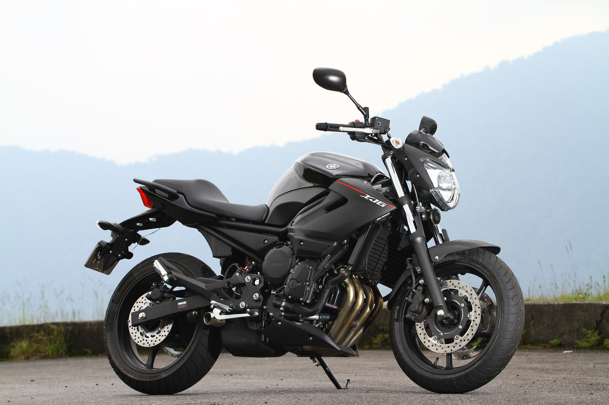

Yamaha XJ6 600cc
O motor de 600cc com duplo comando (DOHC), 16 válvulas e arrefecimento a água desenvolve potência de 77,5 cavalos a 10.000 rpm e torque de 6,1 kgf.m a 8.500 rpm. Em função do seu projeto, esse propulsor trabalha um melhor em altos giros, oferecendo um rendimento mais tímido nas situações de baixas rotações.
R$40.000,00